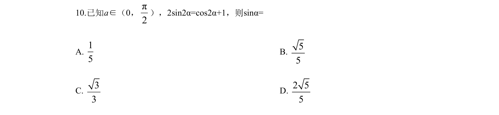
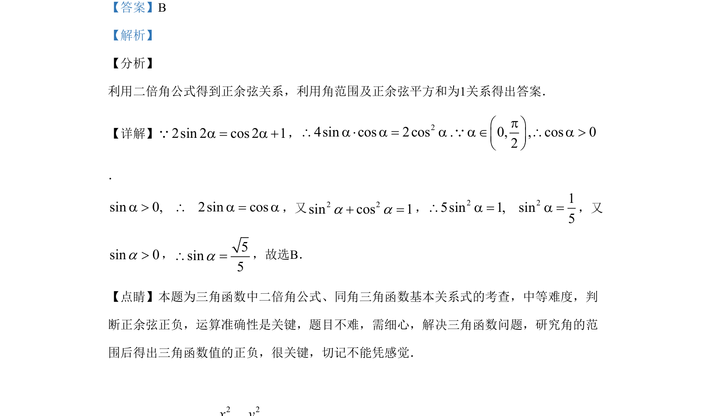

考点：二倍角公式 同角三角函数关系 三角函数求值

利用二倍角公式和同角关系求正弦值，需注意角范围判断正负。

📄 原 PDF 第 7 页：
素材/真题/吉林/2008-2024·（吉林）数学高考真题/2019年高考数学试卷（理）（新课标Ⅱ）（解析卷）.pdf
10.已知a∈（0，π2 ），2sin2α=cos2α+1，则sinα= A. 15 B. 55 C. 33 D. 2 55
【答案】B 【解析】 【分析】 利用二倍角公式得到正余弦关系，利用角范围及正余弦平方和为1关系得出答案． 【详解】2sin 2 cos 2 1a = a +Q， 24sin cos 2cos . 0, , cos 02pæ ö\ a × a = a a Î \ a >ç ÷è øQ ． sin 0, 2sin cosa > \ a = a，又2 2sin cos 1a a+ =， 2 215sin 1, sin5\ a = a =，又 sin 0a>， 5sin5a\ =，故选B． 【点睛】本题为三角函数中二倍角公式、同角三角函数基本关系式的考查，中等难度，判 断正余弦正负，运算准确性是关键，题目不难，需细心，解决三角函数问题，研究角的范 围后得出三角函数值的正负，很关键，切记不能凭感觉．